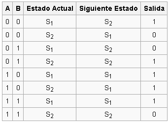
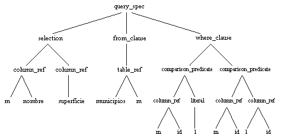

Análisis Léxico
Tema1.- Aspectos generales de un analizador léxico
Un analizador léxico y/o analizador lexicográfico (en inglés scanner) es la primera fase de un compilador consistente en un programa que recibe como entrada el código fuente de otro programa (secuencia de caracteres) y produce una salida compuesta de tokens (componentes léxicos) o símbolos. Estos tokens sirven para una posterior etapa del proceso de traducción, siendo la entrada para el analizador sintáctico (en inglés parser).
La especificación de un lenguaje de programación a menudo incluye un conjunto de reglas que definen el léxico. Estas reglas consisten comúnmente en expresiones regulares que indican el conjunto de posibles secuencias de caracteres que definen un token o lexema.
En algunos lenguajes de programación es necesario establecer patrones para caracteres especiales (como el espacio en blanco) que la gramática pueda reconocer sin que constituya un token en sí.

Tema2.- Definicion de grafos y automatas
Grafos
Los grafos son el objeto de estudio de esta rama de las matemáticas. Arriba el grafo pez, en medio el grafo arco y abajo el grafo dodecaedro.

La teoría de grafos (también llamada teoría de las gráficas) es un campo de estudio de las matemáticas y las ciencias de la computación, que estudia las propiedades de los grafos (también llamadas gráficas, que no se debe confundir con las gráficas que tienen una acepción muy amplia) estructuras que constan de dos partes, el conjunto de vértices, nodos o puntos; y el conjunto de aristas, líneas o lados (edges en inglés) que pueden ser orientados o no. Por lo tanto también esta conocido como análisis de redes.
La teoría de grafos es una rama de las matemáticas discretas y de las matemáticas aplicadas, y es un tratado que usa diferentes conceptos de diversas áreas como combinatoria, álgebra, probabilidad, geometría de polígonos, aritmética y topología.
Actualmente ha tenido mayor preponderancia en el campo de la informática, las ciencias de la computación y telecomunicaciones.

Grafos
Autómata, del latín automăta y este del griego αὐτόματος autómatos, ‘espontáneo’ o ‘con movimiento propio’. Según la RAE, ‘máquina que imita la figura y los movimientos de un ser animado’1 , es un equivalente tecnológico en la actualidad; serían los robots autónomos. Si el robot es antropomorfo se conoce como androide.

La teoría de autómatas es una rama de las ciencias de la computación que estudia las máquinas abstractas y los problemas que éstas son capaces de resolver. La teoría de autómatas está estrechamente relacionada con la teoría del lenguaje formal ya que los autómatas son clasificados a menudo por la clase de lenguajes formales que son capaces de reconocer.
Un autómata es un modelo matemático para una máquina de estado finito (FSM sus siglas en inglés). Una FSM es una máquina que, dada una entrada de símbolos, "salta" a través de una serie de estados de acuerdo a una función de transición (que puede ser expresada como una tabla). En la variedad común "Mealy" de FSMs, esta función de transición dice al autómata a qué estado cambiar dados unos determinados estado y símbolo.

La entrada es leída símbolo por símbolo, hasta que es "consumida" completamente (piense en ésta como una cinta con una palabra escrita en ella, que es leída por una cabeza lectora del autómata; la cabeza se mueve a lo largo de la cinta, leyendo un símbolo a la vez) una vez la entrada se ha agotado, el autómata se detiene.
Dependiendo del estado en el que el autómata finaliza se dice que este ha aceptado o rechazado la entrada. Si éste termina en el estado "acepta", el autómata acepta la palabra. Si lo hace en el estado "rechaza", el autómata rechazó la palabra, el conjunto de todas las palabras aceptadas por el autómata constituyen el lenguaje aceptado por el mismo.
Tema3.- Definicion de clases, estados y tokens
Clases
En informática, una clase es una plantilla para la creación de objetos de datos según un modelo predefinido. Las clases se utilizan para representar entidades o conceptos, como los sustantivos en el lenguaje. Cada clase es un modelo que define un conjunto de variables -el estado, y métodos apropiados para operar con dichos datos -el comportamiento. Cada objeto creado a partir de la clase se denomina instancia de la clase.
Las clases son un pilar fundamental de la programación orientada a objetos. Permiten abstraer los datos y sus operaciones asociadas al modo de una caja negra. Los lenguajes de programación que soportan clases difieren sutilmente en su soporte para diversas características relacionadas con clases. La mayoría soportan diversas formas de herencia. Muchos lenguajes también soportan características para proporcionar encapsulación, como especificadores de acceso.
Una clase también puede tener una representación (metaobjeto) en tiempo de ejecución, que proporciona apoyo en tiempo de ejecución para la manipulación de los metadatos relacionados con la clase.

Estados
En Ciencias de la computación y en Teoría de autómatas, un estado es una configuración única de información en un programa o máquina. Esto es un concepto que ocasionalmente se ha extendido en varias formas de programación de sistemas tales como lexers y Parsers.
Si el autómata en cuestión es una Máquina de estados finitos, un Autómata con pila o una auténtica Máquina de Turing, un estado es un conjunto particular de instrucciones las cuales serán ejecutadas en respuesta a la entrada de la máquina. Se puede pensar en el estado como algo análogo a la memoria principal de la computadora. El comportamiento del sistema es una función de (a) la definición del autómata, (b) la entrada y (c) el estado actual.
Estados Compatibles son estados de una máquina de estados los cuales no tienen conflictos para ningún valor de entrada. Así para cada entrada, ambos estados deben tener la misma salida, y ambos estados deben tener el mismo sucesor (o sucesores sin especificar) o ambos no deben cambiar. Los estados compatibles son redundantes si aparecen en la misma máquina de estados.
Estados Equivalentes son los estados de una máquina de estados los cuales, para cada posible secuencia de entrada, la misma secuencia de salida será producida - sin importar cual estado es el estado inicial.
Estados Distinguibles son estados en una máquina de estados los cuales tienen al menos una secuencia de entrada la cual causa secuencias de salida diferentes - sin importar cual estado es el estado inicial.
Tokens
Un token o también llamado componente léxico es una cadena de caracteres que tiene un significado coherente en cierto lenguaje de programación. Ejemplos de tokens podrían ser palabras clave (if, else, while, int, ...), identificadores, números, signos, o un operador de varios caracteres, (por ejemplo, :=).
Son los elementos más básicos sobre los cuales se desarrolla toda traducción de un programa, surgen en la primera fase, llamada análisis léxico, sin embargo se siguen utilizando en las siguientes fases (análisis sintáctico y análisis semántico) antes de perderse en la fase de síntesis.
Ejemplo
Supongamos la siguiente línea de un programa:
SI Nuevo > MaxNúm ENTONCES
Los tokens son:
* "SI"
* "Nuevo"
* ">"
* "MaxNúm"
* "ENTONCES"
Y se describen por lo general en dos partes, un tipo o clase y un valor, así: Token=(Tipo,Valor)
Para la secuencia anterior, los tokens pueden describirse
* [Palabra Reservada, "SI"]
* [Identificador, "NUEVO"]
* [Operador, ">"]
* [Identificador, "MáxNúm"]
* [Palabra Reservada, "ENTONCES"]
Tema4.- Matriz de transición de estados y matriz de salida
En teoría de autómatas y lógica secuencial, una tabla de transición de estados es una tabla que muestra qué estado se moverá un autómata finito dado, basándose en el estado actual y otras entradas. Una tabla de estados es esencialmente una tabla de verdad en la cual algunas de las entradas son el estado actual, y las salidas incluyen el siguiente estado, junto con otras salidas.
Una tabla de estados es una de las muchas maneras de especificar una máquina de estados, otras formas son un diagrama de estados, y una ecuación característica.
Cuando se trata de un autómata finito no determinista, entonces la tabla de transición muestra todos los estados que se moverá el autómata.

Tema5.- Funcionamiento de un Scanner
Analizador lexico (scanner): lee la secuencia de caracteres del
programa fuente, caracter a caracter, y los agrupa para formar
unidades con significado propio, los componentes lexicos (tokens
en ingles). Estos componentes lexicos representan:
*palabras reservadas: if, while, do, . . .
*identificadores: asociados a variables, nombres de funciones,
tipos definidos por el usuario, etiquetas,... Por ejemplo: posicion,
velocidad, tiempo, . . .
*operadores: = * + - / == > < & ! = . . .
*sımbolos especiales: ; ( ) [ ] { } ...
*constantes numericas: literales que representan valores enteros,
en coma flotante, etc, 982, 0xF678, -83.2E+2,...
*constantes de caracteres: literales que representan cadenas
concretas de caracteres, “hola mundo”,...
Análisis Sintáctico
Tema1.- Aspectos generales de un analizador sintáctico
Un analizador sintáctico (o parser) es una de las partes de un compilador que transforma su entrada en un árbol de derivación.
El análisis sintáctico convierte el texto de entrada en otras estructuras (comúnmente árboles), que son más útiles para el posterior análisis y capturan la jerarquía implícita de la entrada. Un analizador léxico crea tokens de una secuencia de caracteres de entrada y son estos tokens los que son procesados por el analizador sintáctico para construir la estructura de datos, por ejemplo un árbol de análisis o árboles de sintaxis abstracta.
El análisis sintáctico también es un estado inicial del análisis de frases de lenguaje natural. Es usado para generar diagramas de lenguajes que usan flexión gramatical, como los idiomas romances o el latín. Los lenguajes habitualmente reconocidos por los analizadores sintácticos son los lenguajes libres de contexto. Cabe notar que existe una justificación formal que establece que los lenguajes libres de contexto son aquellos reconocibles por un autómata de pila, de modo que todo analizador sintáctico que reconozca un lenguaje libre de contexto es equivalente en capacidad computacional a un autómata de pila.
Los analizadores sintácticos fueron extensivamente estudiados durante los años 1970, detectándose numerosos patrones de funcionamiento en ellos, cosa que permitió la creación de programas generadores de analizadores sintáticos a partir de una especificación de la sintaxis del lenguaje en forma Backus-Naur por ejemplo, tales como yacc, GNU bison y javaCC.
Tema2.- Gramática y diseño de arboles
En lingüística e informática, una gramática libre de contexto (o de contexto libre) es una gramática formal en la que cada regla de producción es de la forma:
V → w
Donde V es un símbolo no terminal y w es una cadena de terminales y/o no terminales. El término libre de contexto se refiere al hecho de que el no terminal V puede siempre ser sustituido por w sin tener en cuenta el contexto en el que ocurra. Un lenguaje formal es libre de contexto si hay una gramática libre de contexto que lo genera.
Las gramáticas libres de contexto permiten describir la mayoría de los lenguajes de programación, de hecho, la sintaxis de la mayoría de lenguajes de programación está definida mediante gramáticas libres de contexto. Por otro lado, estas gramáticas son suficientemente simples como para permitir el diseño de eficientes algoritmos de análisis sintáctico que, para una cadena de caracteres dada determinen cómo puede ser generada desde la gramática. Los analizadores LL y LR tratan restringidos subconjuntos de gramáticas libres de contexto.
Construir el arbol de analisis sintactico que define la estructura jerarquica de un programa y obtener la serie de derivaciones para generar la cadena de componentes lexicos. El arbol sintactico se utilizara como representacion intermedia en la generacion de codigo.

Tema3.- Verificación de sintaxis y aplicación de reglas sintácticas
Definimos genéricamente a las Reglas Sintácticas como los métodos en los que se puede validar y dar forma a una aplicación, siendo solamente un criterio que busca evaluar la combinación de distintos Símbolos, y su correcta aplicación en forma gramatical, teniendo por toro lado tener que hacer un análisis bajo criterio Semántico y otro bajo un término Pragmático.
El estudio está enfocado entonces a las formas en la que se combinan las distintas órdenes creadas en el Código Fuente, las relaciones que existen entre ellas y la elaboración de distintos Paradigmas, siendo un análisis más que nada lógico, elaborado en base a distintos Criterios Formales, y sin tener demasiado en cuenta qué es lo que se ha programado en cuanto a órdenes, servicios o funciones que se hayan creado.
Se tiene en cuenta que un código fuente realizado bajo cualquier Lenguaje de Programación (el conocido también como Lenguaje de Alto Nivel) utiliza un alfabeto de caracteres que se combinan con distintas reglas, normas y conceptos que determinan si uno de estos símbolos a analizar (que lleva el nombre de String) es válido o simplemente ha sido mal programado.
El análisis de la Sintaxis de lo mismo apunta justamente a ello, y además a otros conceptos Libres de Contexto en los que se basa cada uno de estos Lenguajes, siendo estos últimos quizá los más analizados mediante criterios que son denominados como Gramaticales.
Este criterio se refiere a que una variable no pueda sustituir a otra, sin tener en cuenta el criterio que esté ocurriendo en el momento de la ejecución de esa parte del código, por lo que, en términos lógicos, sin tener en cuenta los factores que lo alteren, V no puede ser W.
Tema4.- Estructura de un parser
Un parser podría ser definido como un programa que analiza una porción de texto para determinar su estructura lógica: la fase de parsing en un compilador toma el texto de un programa y produce un arbol sintáctico que representa la estructura del programa.
Definiremos funciones de alto orden para representar secuencia, alternancia y repetición. Así, el código de un parser se asemejará notablementa a la notación BNF de la gramática que reconocen.
Parsers en este estilo son muy fáciles de construir, simples de entender y modificar. Esta metodología se conoce con el nombre de combinator parsing.
Características:
Se pueden reconocer gramáticas ambiguas
Backtracking
Acciones semánticas
Pensemos un parser como una función del siguiente tipo
type Parser = String -> Tree
Problema: no provee una forma natural para secuenciar parsers.
En un parser para expresiones aritméticas uno quisiera buscar primero un número, luego un operador y luego otro número. Cada uno de estos procesos consume parte de la entrada.
Una buena idea sería entonces refinar el tipo Parser de forma que el string de entrada no consumido sea retornado como parte del resultado:
type Parser = String -> (Tree, String)
Tema5.- Lenguaje intermedio
En ciencias de la computación, un lenguaje intermedio es el lenguaje de una máquina abstracta diseñada para ayudar a realizar el análisis de un programa informático. El término proviene de su uso en compiladores, donde el código fuente de un programa es traducido a un modo más apropiado para transformaciones de mejora de código antes de generar el código objeto o código máquina para una máquina determinada. El diseño del lenguaje intermedio difiere típicamente del lenguaje de máquina de tres maneras fundamentales:
Cada instrucción representa exactamente una operación fundamental; por ejemplo, los modos de direccionamiento "shift-add" (desplazar y añadir) comunes en microprocesadores no están presentes.
La información de la estructura de control puede no estar incluida en el juego de instrucciones.
El número de registros disponibles puede ser grande, incluso ilimitado.
Un formato popular para lenguajes intermedios es el de código de tres direcciones.
El término también es usado para referirse a lenguajes usados como intermedios por algunos lenguajes de alto nivel que no crean código objeto o código máquina por sí mismos, sino que solamente el lenguaje intermedio. Este lenguaje intermedio es enviado a un compilador para tal lenguaje, que genera el código objeto o código máquina finalizado. Esto se suele hacer para facilitar el proceso de optimización o para incrementar la portabilidad mediante el uso de un lenguaje intermedio que tenga compiladores para la mayoría de CPUs y sistemas operativos, como puede ser C. Los lenguajes usados para esto tienen una complejidad que se sitúa entre los lenguajes de alto y bajo nivel, como el lenguaje ensamblador.